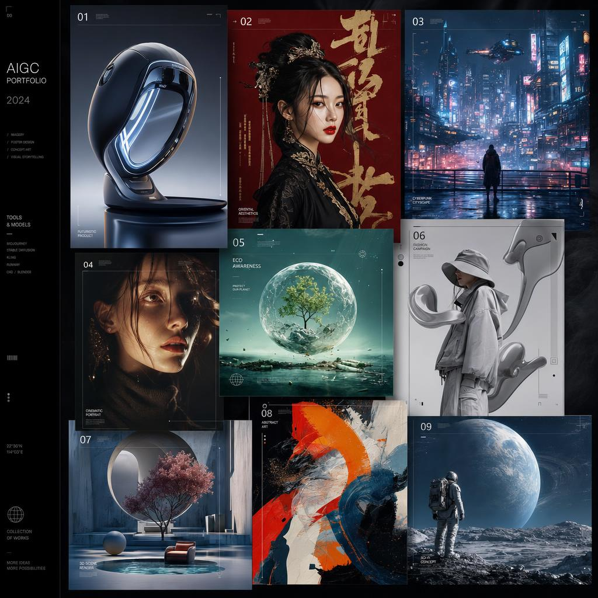
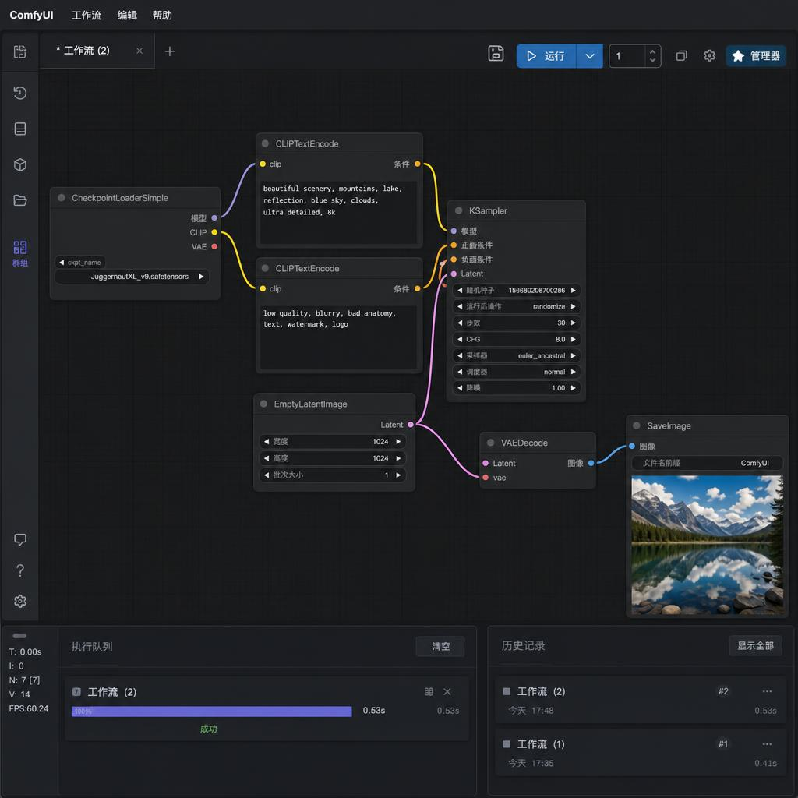
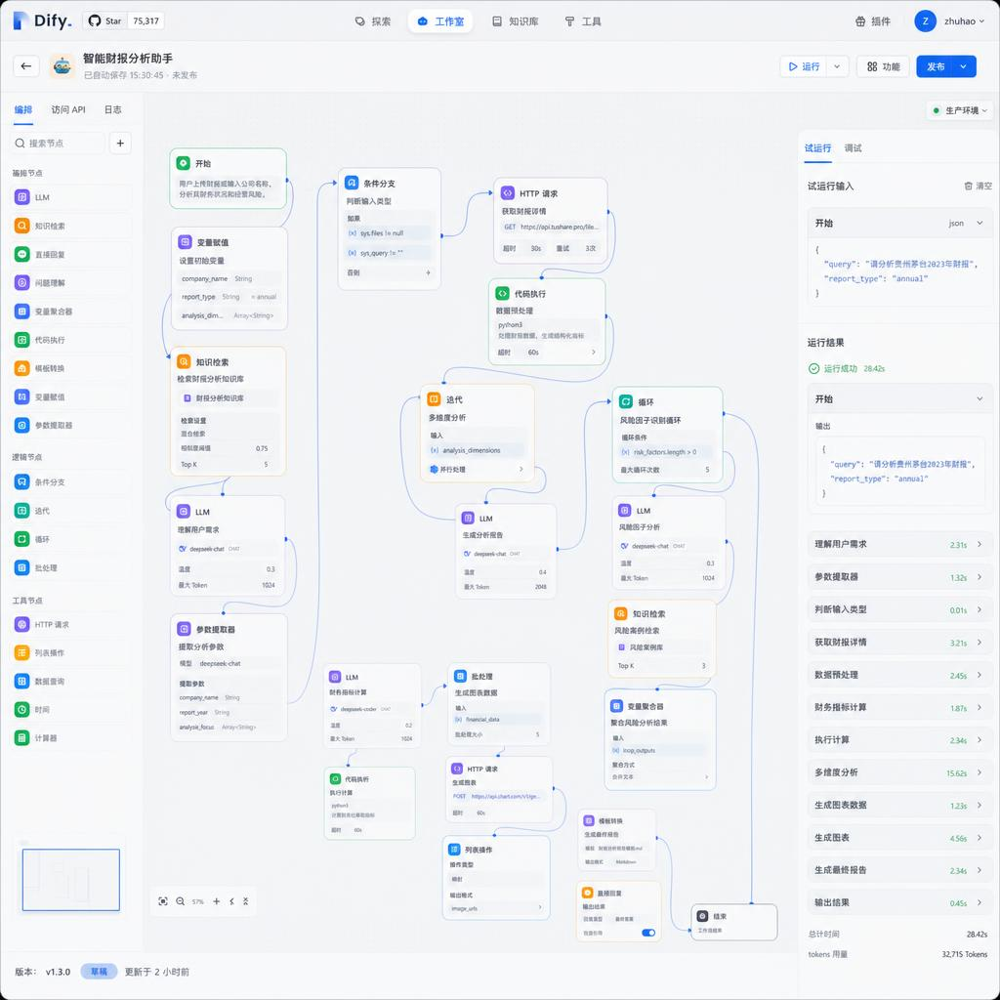
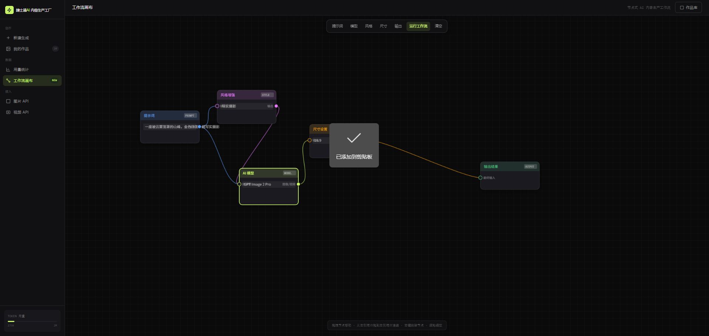
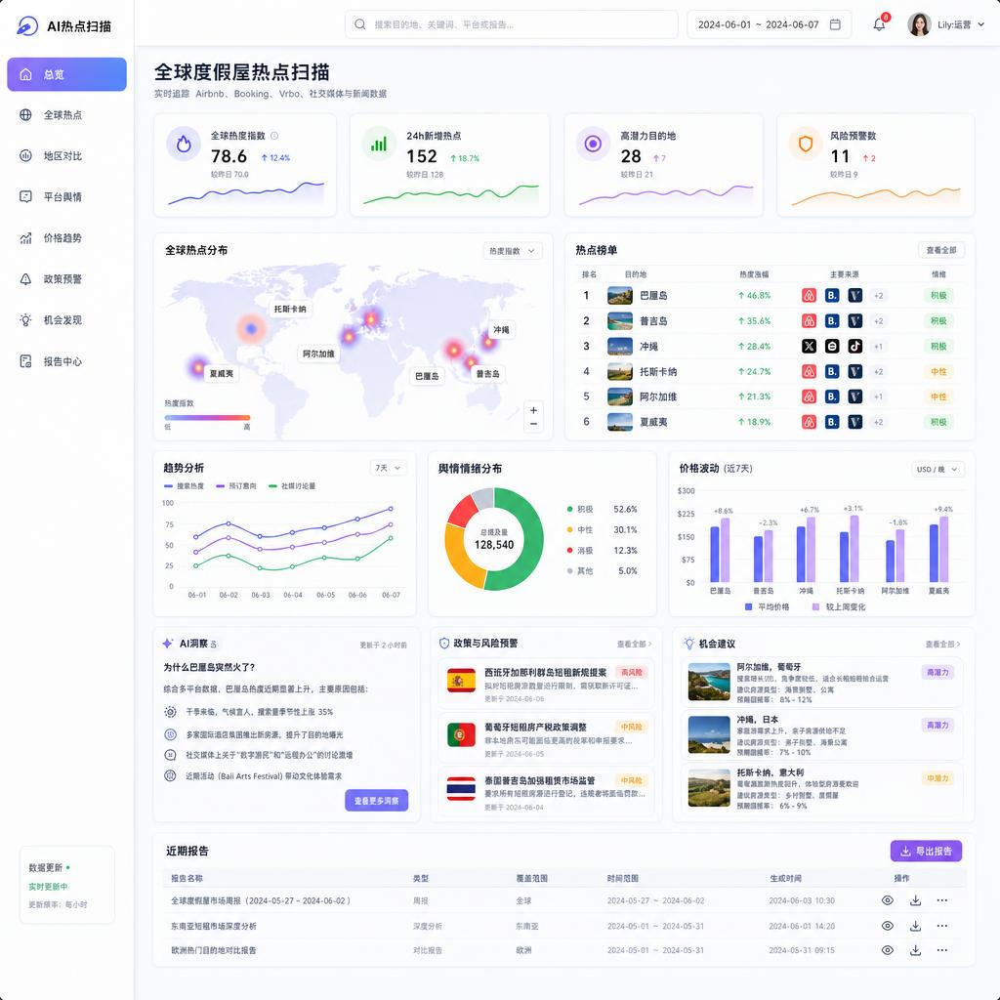
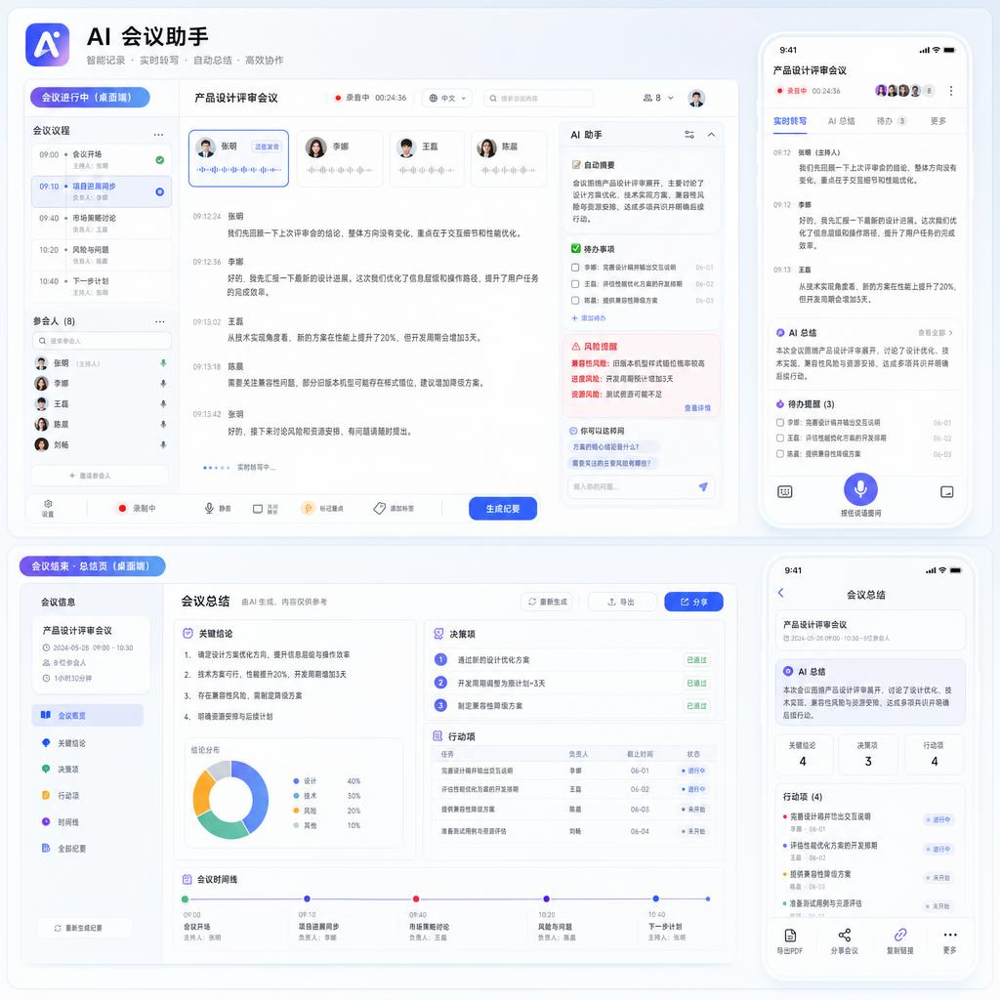
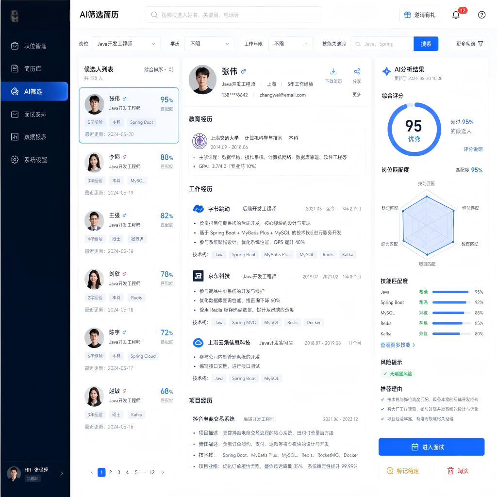

技术背景
×
多数 AI PM 不写代码，需求传到工程师之间靠转译，边界容易跑偏。
✓
我有 5 年前端基础，能直接和工程师讨论实现细节、权限设计和数据接口。
Career Path
前端 → AIGC 设计师 → AI 落地负责人 → AI 产品经理。
懂技术、懂设计、懂业务，才能让 AI 真正落到流程里。
HTML/CSS/JS、企业官网、H5 营销页 30+，访问量破 10W+，开始接触 AIGC。
引入 Stable Diffusion、Midjourney，搭团队 AI 工作流，交付周期缩短 60%。
从 0 搭企业 AI 部门，带 6 人团队，主导海外获客内容工厂。
8 个企业 AI 项目落地，覆盖销售、客服、内容、数据 4 大场景。
懂技术 → 懂设计 → 懂业务 → 能落地
Why Me
技术背景
多数 AI PM 不写代码，需求传到工程师之间靠转译，边界容易跑偏。
我有 5 年前端基础，能直接和工程师讨论实现细节、权限设计和数据接口。
设计能力
多数 AI PM 不懂视觉，AIGC 内容方向只能靠设计师推动，节奏拉不开。
我做过 2 年 AIGC 视觉设计师，能亲自定义内容生产 SOP 与提示词风格库。
落地经验
多数 AI PM 做的是 demo 和 PPT，真上线的项目数量有限。
我主导 8 个真上线项目，从 0 搭企业 AI 部门和工具体系，全部跑到部门日用。
组织推动
多数 AI PM 是独立工种，没有带过团队，也没在传统业务里推过 AI。
我带 6 人团队，培训覆盖 6 个部门 50 人，把 AI 从个人技能变成组织生产力。
大多数企业 AI 项目，死在"做出来"和"被用起来"之间。我把 8 个项目从 demo 推到部门日用，靠的不是更强的大模型，是 SOP、提示词库、培训机制和反馈闭环。
Role Fit
需求拆解 → 方案设计 → 对接技术 → 推动落地 → 数据复盘。完整产品闭环 + 跨部门协同能力。
从业务流程拆 AI 场景，设计方案、推进试点，把结果讲清楚。
适合内容工厂、设计提效、海外获客素材和多模态生产流程。
我的强项是 AI 应用、业务场景和项目交付，不是底层模型研发。
Lessons
这些不是网上能搜到的方法论。是从踩过的坑里长出来的判断力。
误以为 把公司的资料丢进知识库，AI 就能秒回所有问题。
真相 80% 的效果取决于知识结构、权限分层和反馈机制，不是模型。
我现在的做法 先做"知识清洗 + 分层 + 维护机制 + 错误样本回收"，再考虑上模型。
误以为 做出 demo 给老板看，通过了就算项目落地。
真相 从 demo 到 50 人天天用，中间隔着 SOP、提示词库、培训路径和容错设计。
我现在的做法 每个项目交付前先写"使用门槛 + 维护人 + 培训手册"，没这三个不算上线。
误以为 从 GPT-3.5 升 GPT-4、再换 Claude，效果就能解决。
真相 80% 的"AI 效果差"问题，源头是业务流程没拆清、需求边界不明确。
我现在的做法 先用 1 周梳清业务流程和 KPI 定义，再决定模型选型。流程清了，模型差异就小。
Project Flow
不是抽象框架。这是我主导的内容工厂，每天跑通的实际流程。
ChatGPT · 趋势库
→ 选题清单
ChatGPT / Claude
→ 多版本卖点脚本
Midjourney · SD
→ 主图 + 变体
Runway · CapCut
→ 短视频成片
Dify · 工作流
→ 反哺提示词库
GA · 独立站
→ 漏斗 + 转化
TikTok · Facebook
→ A/B 测试批次
结果 日均内容产出 5 条 → 15-20 条 · 内容成本 −50% · 获客成本 −25%+
Cases
全部为我主导或深度参与的企业落地项目，已上线运行中。点击任一卡片展开完整故事、动作、工具链与业务结果。
Project · Overseas Growth
原来海外素材产出慢、测试样本少，我把调研、脚本、素材、投放和复盘串成闭环，最后做成可持续迭代的内容工厂。
Project · Knowledge Agent
原来资料散落在文档和聊天记录里，重复问答很多，我把知识整理成可检索的助手，让销售、客服和新人都能快速找到标准答案。
人效提升 30%+Project · AIGC Workflow
原来提案和概念设计周期长、重复成本高，我把 AIGC 接入设计流程，让团队能更快产出可复用的方案和视觉交付。
交付周期缩短 60%Project · Sales Growth
销售跟进依赖个人经验、客户资料分散，我把线索、卖点和话术沉淀成 AI 助手，提升响应速度和转化效率。
线索响应提速 6×Project · Service Efficiency
客服重复答疑多、知识维护又跟不上，我把质检、FAQ 和问题归因串起来，让服务过程能持续反哺知识库。
重复咨询下降 35%+Project · Management Efficiency
会议、日报和经营数据彼此割裂，我把信息整合成 AI 助手，让管理层能快速看到问题、进展和责任人。
任务闭环率 95%+Project · Private Deployment
企业想用 AI 又担心数据外泄，我先设计权限、隔离和本地部署方案，再把使用边界做清楚。
部署周期缩短 70%+Proof
以下 7 个项目均由我主导或深度参与，截图为真实后台 / 工作流 / 产品输出。客户名与敏感数字已脱敏。

AIGC 出图Midjourney · Stable Diffusion · Flux
9 张产品级海报，覆盖东方美学 / 赛博朋克 / 极简产品 / 3D 渲染 4 种风格。

工作流ComfyUI · JuggernautXL v9 · SDXL
节点化出图链路：模型→提示词→采样→VAE→输出，单张推理 0.53s，可批量、可调参、可复用。

Dify · RAGDify · DeepSeek · RAG · 多维分析
上传财报 PDF 自动生成风险因子识别 + 多维度分析报告，单次 28s / 32K tokens。

企业产品自研工作流引擎 · GPT Image 2 Pro
提示词 / 风格 / 尺寸节点化，支持图像与视频生成，对接图片 API、视频 API 与作品库。

BI · LLM数据中台 · LLM 洞察 · 多源采集
实时追踪 Airbnb / Booking / Vrbo 全球热度、舆情、价格波动，输出周报与政策风险预警。

产品设计实时转写 · LLM 总结 · 双端
实时转写 + 自动摘要 + 待办提取，会后 30 秒生成完整纪要，支持桌面端与移动端。

HR · 匹配RAG · 多维匹配 · 雷达评分
从 JD 自动解析硬性要求，对候选人输出综合匹配分（95/100）+ 能力雷达图。
点击任意截图查看大图。所有项目可在面试中按时间线 / 技术栈 / 业务结果展开说明。
Perspectives
不是预测，是过去 18 个月落地 8 个项目得出的结论。
大模型能力差距正在收敛，2026 年开始拼应用层。Agent 编排能力 + 业务流程定义，才是真正的护城河。谁先把"工作流程"翻译成"可执行 Agent"，谁就赢。
多数企业的知识库混乱，是 10 年文档管理失效的结果。上 RAG 之前不做知识工程，效果只能停在"看起来能用"。先治知识结构，再上模型。
提案、概念、变体、海报这类高频重复的工作，AIGC 完胜。但品牌策略、设计判断、创意原创性，设计师不可替代。会用 AIGC 的设计师，淘汰不会用的。
Capabilities
企业 AI 场景识别、项目交付、业务流程 AI 化、跨部门培训推广。
LLM、RAG、Agent、Dify、LangChain、Docker 和 GPU 本地部署。
ChatGPT、DeepSeek、Claude、Midjourney、Stable Diffusion、Runway。
Web 前端、视觉设计、品牌设计、海外获客素材策略和团队管理。
Tool Stack
Certifications
Positioning
做过前端、做过 AIGC 设计、做过企业 AI 落地，所以我能从业务流程出发判断哪些环节适合 AI 化，再用 LLM、RAG、Agent 和 AIGC 工具链设计可落地方案，推动技术和业务部门真正用起来。我的优势不是某一项能力最深，而是能把"AI 能力"翻译成"业务结果"。
Commitment
不是给你画饼，是把产品经理的"迭代节奏"用在企业 AI 落地上。
从摸底到见数，每一步都有产出物，每一步都能验收。
交付物《AI 落地优先级地图 v1.0》+ MVP 立项文档
交付物可用的 MVP 系统 + 第 1 轮用户反馈报告
交付物业务数据复盘 + 可复用的落地方法论 SOP
以上节奏是我做完 8 个企业 AI 项目沉淀出的默认 SOP，具体步骤会根据贵司业务、团队和优先级调整。
Contact
📍 北京 · AI 产品经理 · 期望薪资 15-19K